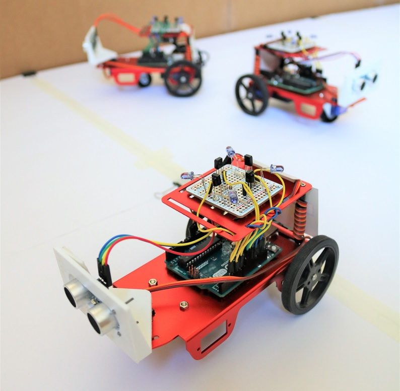
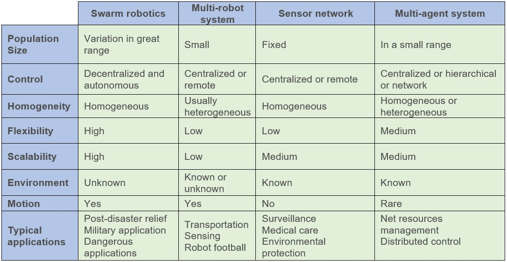
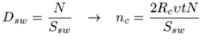
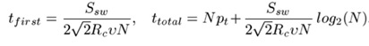
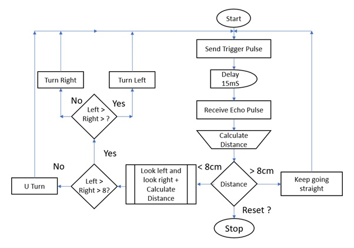
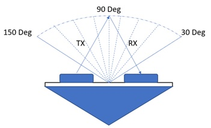
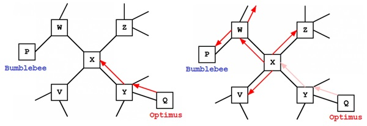
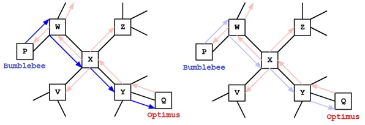
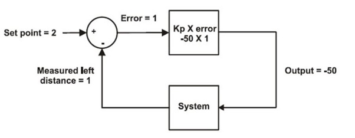

Ant Colony Optimization and Formation Control of Swarm Robots
Date: Spring 2018 | Category: Graduate Research Project | Affiliation: Colorado State University
Swarm robotics is one of the ground-breaking methods to recreate artificial intelligence of ants, bees, wasps, termites and even humans. They possess the ability to function together and perform complex tasks without a centralized control mechanism or high processing power.
Dependencies:


Media
Ant Colony Particle Swarm Optimization

Unsupervised Formation Control
Overview
Initially the project was part of my final project for MECH 681A4 - Biologically Inspired Robotics course offered by Dr. Jianguo Zhao. Based on positive results and room for development and research, it evolved into a Graduate Research Project contributing towards my Master's Degree in Electrical Engineering. Prof. Anthony A. Maciejewski and Prof. Edwin K. P. Chong acting as additional advisors.
Swarm Robotics is a modus operandi to co-ordination of multi-robot systems which achieve collective behaviour comprising of multi-robot systems which can sense and understand their environment. These robots individually do not have a high computing power. But the system as a whole is able to perform complex tasks and functions which is time consuming. These simple agents interact locally with one another and their environment. Eusociality in these animals and insects give rise to Swarm Intelligence (SI). Swarm Intelligence is the collective behaviour of decentralized, self-organized systems, natural or artificial. The key component of their collective behaviour is their ability to function individually and stronger as a group.
The simplest of mathematical models of animal and insect swarms generally represent individual animals as three following rules:
- Move in the same direction as your neighbours
- Remain close to your neighbours
- Avoid collisions with your neighbours
 Table 1. Comparision of Swarm Robot and other Systems
Dynamic Structure
We modelled each of our individual robots to mimic the different body parts of an ant. To be precise they do not have the same structure but have similar functions which help us achieve the biological capabilities of the ant and its abilities. In this section we will talk mostly about the hardware parts used in realizing our swarm robot.
- Eyes - HC SR04 Ultrasonic Sensor
- Antennae - Infrared Receiver Sensor - TSOP38238
- Body 3D printed parts using LulzBot Mini and INOVA-1800 Filament
- Pheromones – IR333 5mm 940nm IR LED
- Brain – ATMEGA328P Microprocessor and Broadcom BCM2837B0 SoC
- Communication - Omnidirectional IR Communication Module : Self Fabricated
Omnidirectional IR Sensor (First of its kind)
Modified IR Library for Arduino can be found at this GitHub location
Our major obstacle in this project was to realise an omnidirectional sensor. This was necessary with utmost importance since there is no sensor available in the market which can sense signals coming from 360 degrees and also make out the difference between those signals at the same time. Nevertheless, modulation and demodulation for transmitting and receiving the signals was another challenge in order to eliminate the interferences from the environment and other IR signals generated by the sun, light emission sources, reflections etc.
Figure 1. Initial 6 TX/RX realization
The IR-equipment has also the problem of interferences. They appear, like in RF case, when several neighbour robots transmit simultaneously. The problem of IR-interferences can be avoided by restricting an opening angle of a pair IR-receiver-transmitter. For four communication channels, the opening angle of each channel is 90°. In this case we have 2- and 3-robots IR-interferences even in the "closest" radius (50 mm). Reducing the opening angle to 60° or to 40° allows avoiding IR-interferences in the "close" and "near" radius (100 mm) Since many microcontrollers have 8-channel ADC (one ADC input is used by the distance sensor), we choose 4-channel directional communication.
Figure 2. Our fabrication of the Omidirectional IR Transceiver Module
Total Time Required for Sharing Information for All Swarm Robots
Firstly, we are interested in the number of communication contacts n_c happens during the motion. This value is equal to the average number of robots in the area S_c, n_c=S_c D_sw, where D_sw is the swarm density. We assume that the collision avoiding radius and the robot's rotation radius are small so that we can neglect the area of fractures.
Figure 3. (Left) Information transmission model (Right) Values Total time required for transmission total in seconds for different values of N (number of robots)
In this case S_c=2 R_c \upsilon t. D_sw can be calculated as the number of robots N in swarm divided by the area available for the whole swarm S_sw:

From the above equation, we can calculate the time till the first infection t_first and the total time t_total= n~t_first+Np_t for infecting the whole swarm as, Where:
nc = Number of Communication Contacts
Dsw = Swarm Density
Rc = Communication radius
v = Robot motion velocity
T = Time for motor ON
N= Number of robots

Autonomous Navigation and Mapping


Figure 4 and 5. Ultrasonic Range Finder to gather distance particles for SLAM
Message Routing
Each swarm robot maintains connections to several "neighbours" in the network, and these neighbouring connections are used for message passing. Suppose that swarm robot X receives a message from Optimus to Bumblebee through robot Y, one of its neighbours. X may have no information clues about where Bumblebee is in the network. However, upon receiving this message, robot X learns something about Optimus: it learns that messages from Optimus come through robot Y. In the future, if node X ever receives a message to Optimus, it can send it back through Robot Y using this clue.

Figure 6. Routing from Optimus to Bumblebee
Regardless of what X learns about Optimus, it still has no information about Bumblebee. The best strategy here, using ants as inspiration, is to "send ants in all directions", or to send a copy of the message on to each one of X's neighbours (what we will call "broadcasting" the message). One of the neighbours may have more information about which direction Bumblebee is in. If none of the robots in the network have clues about Bumblebee's location, they will all broadcast the message to their neighbours. If Bumblebee exists in the network, this technique will eventually find him.
Notice that, throughout the search for Bumblebee, the message has been leaving a trail of clues about Optimus. If the message reaches Bumblebee, and then Bumblebee sends back a response, the response can follow these clues on a rather direct path back to Optimus. As shown in figure 18, the response is routed to Optimus, it leaves a trail of clues that can be used to route future messages from Optimus back to Bumblebee. Other robots can make use of these clues too. For example, if robot X sends a message to Bumblebee, the message will travel on a rather direct route using the existing clues.

Figure 7. Routing from Bumblebee to Optimus
Formation Control - PD controller for DC Motor
For this project we use the following equations:
- Set point – measured distance = error
- Error x Kp = Output for Maneuver
- Output for maneuver = (Distance Set point – Measured Distance) x Kp

Figure 8. Block Diagram of PD Controller Real-Time Velocity calibration